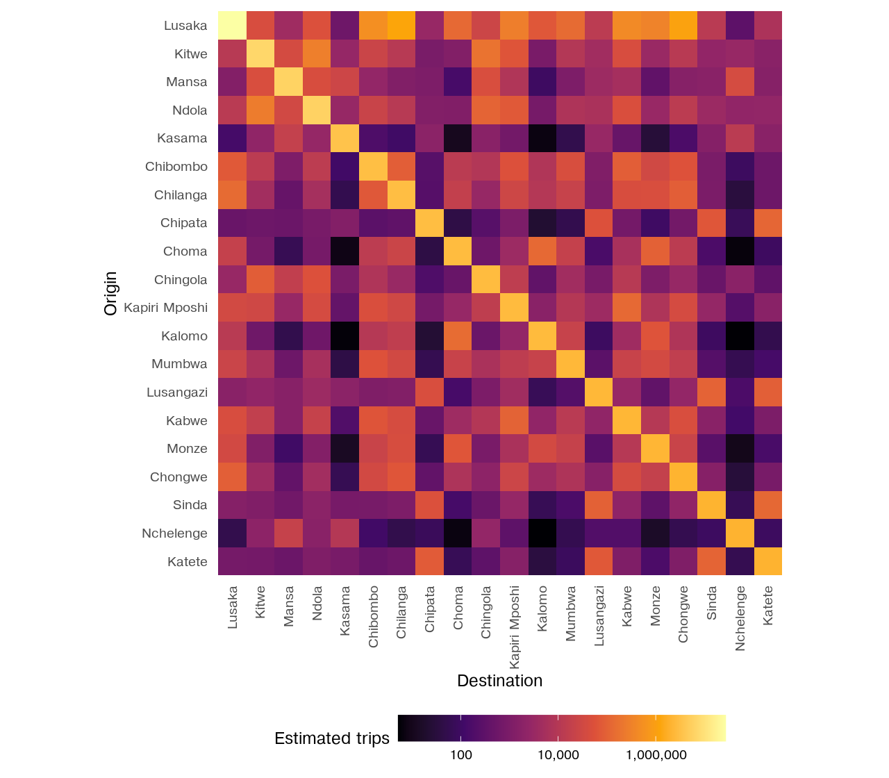

Mobility modelling for infectious disease epidemiology
nomad helps you predict movement between regions using fitted mobility models. Start with your study area’s boundaries, add population sizes and distances, and use a model from the database to estimate a matrix of trips.
Installation
Install JAGS 4.x, then install nomad from GitHub. On macOS, use the official JAGS 4.3.2 installer.
remotes::install_github("OJWatson/nomad", upgrade = FALSE)From a shapefile to mobility predictions
Most users will come to nomad with a shapefile for which they want mobility predictions. You can read your boundaries with sf:
regions <- sf::st_read("path/to/your/regions.shp")For a complete example, we use Zambia’s district boundaries from the Malaria Atlas Project. This download requires the malariaAtlas package (install.packages("malariaAtlas")). If you use your own boundaries, replace name_2 below with the column containing your unique region names.
For these regions, we need population sizes. nomad can fetch a WorldPop raster and extract the population cells within each boundary:
population <- get_pop("ZMB", 2020)
pop_extract <- unpack_pop(regions, population)
N <- setNames(
round(vapply(pop_extract$pop, sum, numeric(1), na.rm = TRUE)),
regions$name_2
)Next, calculate the distances between region centroids. We find centroids in a projected coordinate system suitable for Zambia, then calculate geographic distances in metres. The matrix names and population names must identify the same regions in the same order.
centroids <- sf::st_centroid(sf::st_geometry(sf::st_transform(regions, 32735)))
distances <- sf::st_distance(sf::st_transform(centroids, 4326))
D <- matrix(as.numeric(distances), nrow = nrow(regions),
dimnames = list(regions$name_2, regions$name_2))Now choose a model from the model catalogue. For this example, we use the Zambia Facebook exponential departure-diffusion model and predict movement between our districts:
model <- model_db$zmb_fb_2025_mod_dd_exp
M_hat <- predict(model, newdata = list(D = D, N = N), unit = "m")Rows are origins and columns are destinations. The matrix contains estimated trips on the same time basis as the matrix used to fit the model. The introduction explains these inputs and prediction options in more detail.
We can plot the predictions as a heatmap. Here we show the 20 largest districts by population so that the labels remain readable; M_hat contains predictions for every district.
shown <- names(sort(N, decreasing = TRUE))[1:20]
flows <- as.data.frame(as.table(M_hat[shown, shown]))
names(flows) <- c("origin", "destination", "trips")
flows$origin <- factor(flows$origin, levels = rev(shown))
flows$destination <- factor(flows$destination, levels = shown)
ggplot2::ggplot(flows, ggplot2::aes(destination, origin, fill = trips)) +
ggplot2::geom_tile() +
ggplot2::scale_fill_viridis_c(
option = "inferno", trans = "log1p",
breaks = function(x) 10^pretty(log10(pmax(x, 1)), n = 3),
labels = function(x) format(x, big.mark = ",", scientific = FALSE, trim = TRUE)
) +
ggplot2::coord_equal() +
ggplot2::labs(x = "Destination", y = "Origin", fill = "Estimated trips") +
ggplot2::theme_minimal(base_size = 11) +
ggplot2::theme(
panel.grid = ggplot2::element_blank(),
axis.text.x = ggplot2::element_text(angle = 90, hjust = 1, vjust = 0.5),
legend.position = "bottom",
legend.key.width = grid::unit(1.5, "cm")
)
Where to go next
- Introduction: understand model inputs, predictions and time scaling.
- Models and mobility data: browse the searchable catalogue, explore coverage on the map and inspect model fits.
- Selecting a mobility model: compare candidates, explore uncertainty and combine predictions.
- An outbreak example: see how mobility assumptions affect a spatial epidemic.